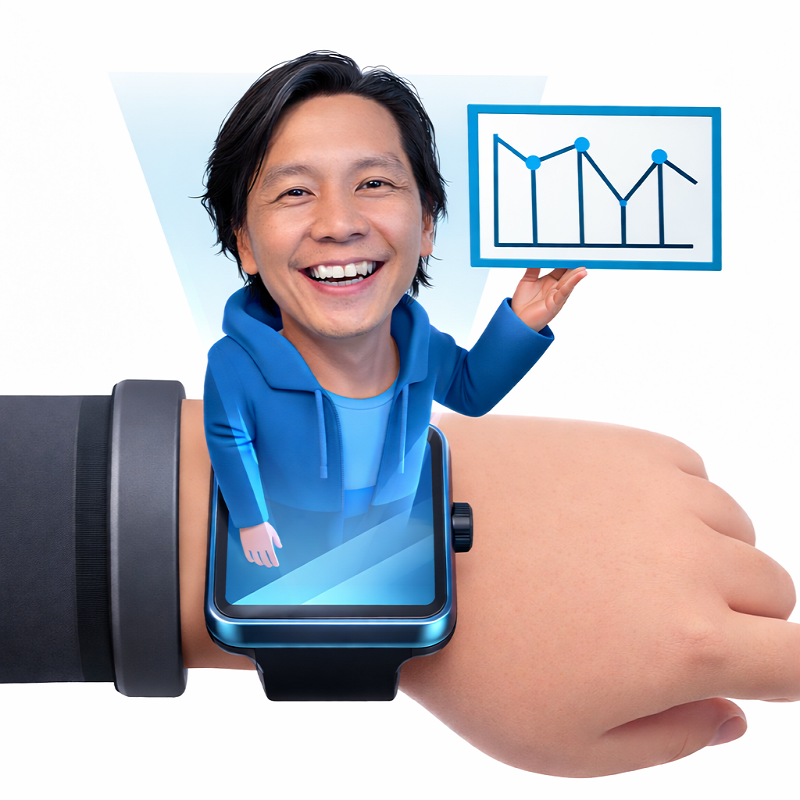

Tôi không bắt đầu dự án ngay từ thiết kế.
Phần lớn mọi người nghĩ rằng thiết kế bắt đầu từ giao diện.
Nhưng trong thực tế, mỗi lần bắt đầu một dự án, thứ đầu tiên xuất hiện không phải là layout, mà là một mớ thông tin rời rạc.
Mỗi người trong doanh nghiệp hiểu dịch vụ một kiểu.
Có những thứ làm rất nhiều nhưng không ai nói ra được.
Có những thứ viết rất dài nhưng người ngoài đọc vẫn không hiểu.
Và nếu bắt đầu thiết kế ngay từ đó,
kết quả thường chỉ là một website đẹp… nhưng không dùng được.

Tôi thường làm việc theo hướng: đọc cách vận hành thật → bóc tách logic → sắp xếp lại thành cấu trúc → thiết kế chất liệu phù hợp để người khác có thể dùng, hiểu và triển khai tiếp.
Cách tôi bắt đầu một dự án.
Tôi sẽ không thiết kế ngay.
Tôi bắt đầu bằng việc ngồi xuống, xem toàn bộ những gì đang có.
Không chỉnh sửa, không tối ưu, chỉ để hiểu:
...
Công việc thực sự đang diễn ra như thế nào
Dịch vụ đang được làm theo thói quen hay có hệ thống
Người trong hiểu khác người ngoài ở chỗ nào
...
Ở giai đoạn này, thứ quan trọng nhất không phải là ý tưởng,
mà là hiểu đúng thực tế.
Khi mọi thứ bắt đầu rõ ra
Tôi định hình và định dạng mọi thứ cần thiết cho mục tiêu thiết kế.
Có những bước bị lặp lại.
Có những phần bị thiếu
Có những chỗ khiến người khác hiểu sai
Thiết kế chất liệu phù hợp
Để tạo ra một dòng chảy
Đọc cách vận hành thực tế
Tôi nhìn vào cách một công việc đang chạy trong đời thực, không chỉ vào cách nó được mô tả trên giấy.
Thiết kế chất liệu phù hợp
Mỗi vấn đề cần đúng chất liệu của nó: tài liệu, dashboard, workflow map, micro tool hay giao diện.
Làm để người khác dùng tiếp
Mục tiêu cuối cùng không phải là một bản đẹp, mà là thứ có thể hiểu, chuyển giao và tiếp tục phát triển.
Viết lại - nhưng không phải để
“trông hay hơn”.
Phần lớn nội dung ban đầu không sai.
Nó chỉ khó hiểu.
Tôi viết lại để:
mỗi đoạn có một mục đích rõ ràng
mỗi phần nối được với phần sau
người đọc không phải dừng lại để “nghĩ xem đang nói gì”
Khi làm đúng, nội dung không cần cố gắng thuyết phục,
nó tự giải thích được.
Lúc đó mới bắt đầu thiết kế
Giao diện chỉ xuất hiện khi cấu trúc đã ổn định.
Vì nếu thông tin chưa rõ,
thiết kế chỉ là che đi sự rối.
Khi đã có flow:
việc thiết kế trở nên đơn giản hơn
thứ tự hiển thị tự nhiên hơn
người dùng không cần “học cách dùng web”
Đóng gói tri thức & tài liệu
Chuyển những nội dung rời rạc hoặc phức tạp thành các gói thông tin dễ đọc, dễ dùng và có thể nhân rộng.
Kết quả cuối cùng
Thứ được tạo ra không chỉ là một hình ảnh,
mà là một giải pháp thực sự hữu ích.